Welcome to the Usage guide to the Plant Phenotyping GUI
Check out the installation guide at installation
Upon launching the GUI, click the generated link or paste the link into your browser. The page will be as below:
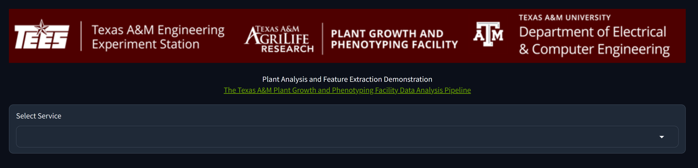
Select Service Type and Submit Request
From the Select Service dropdown, you can choose two options.
- Single Plant Analysis will analyze images of a single plant and generate features and statistics of that plant
- Multi Plant Analysis will analyze images of multiple plants at once and give a comparison of plant statistics across all plants. This option is chosen by default if not selected.
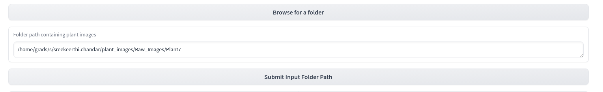
After selecting the service type, you will be prompted to browse the folder path to input images. The expected structure of the input folder is as below
Here, raw images of each plant are separated into different folders. Image names of a plant in its folder should be named in sorted order so that the order can be used to stitch the images later to generate a single stitched image per plant.
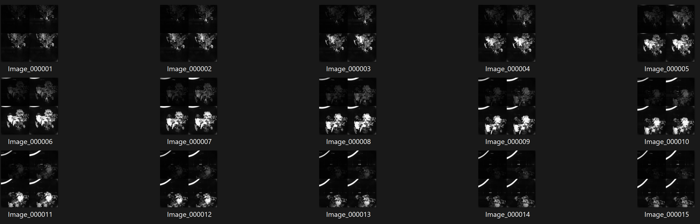
If the selected service type is Single Plant Analysis, enter the folder path of one plant that contains its images. For Multi Plant Analysis, enter the path to the directory containing multiple plant directories as shown above.
After entering the folder path, you can click Submit Input Folder Path and you will be asked to choose some options to display additional images in the analysis.
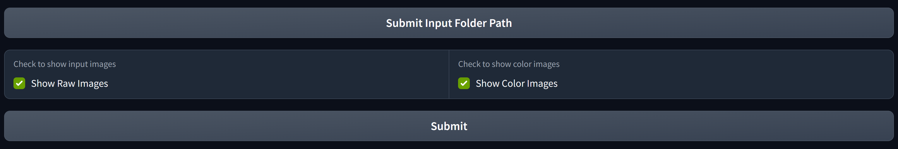
Show Raw Images will display the input raw images. Show Color Images will display the input images after converting them to color. These options can be used for inspection if necessary.
Upon choosing options, click Submit which submits the request to the host server. A textbox will be displayed saying the number of plants being analyzed.
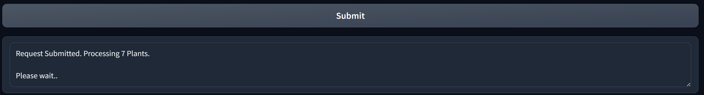
Plant Analysis
After the host server analyzes the Plants, It will display the summary of plant statistics
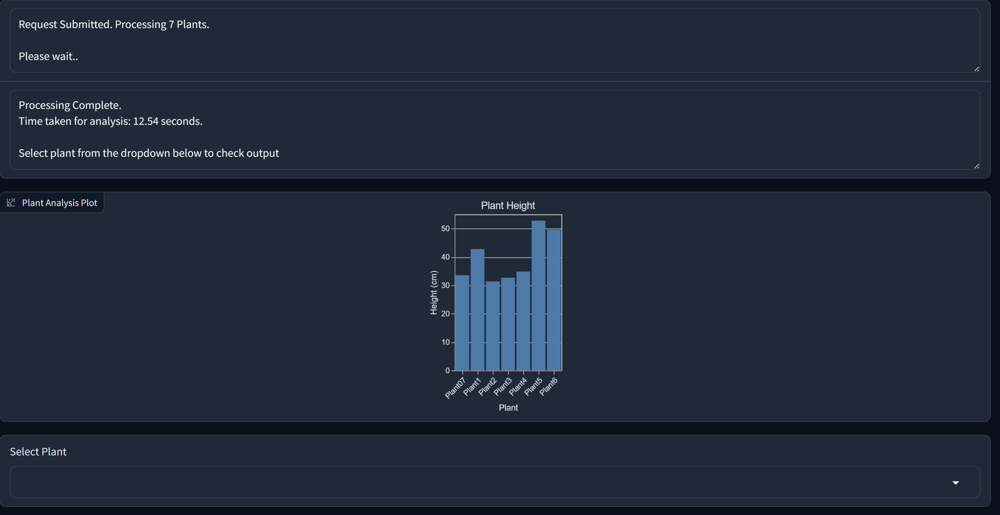
In the below plot, you can check the comparison of estimated plant heights
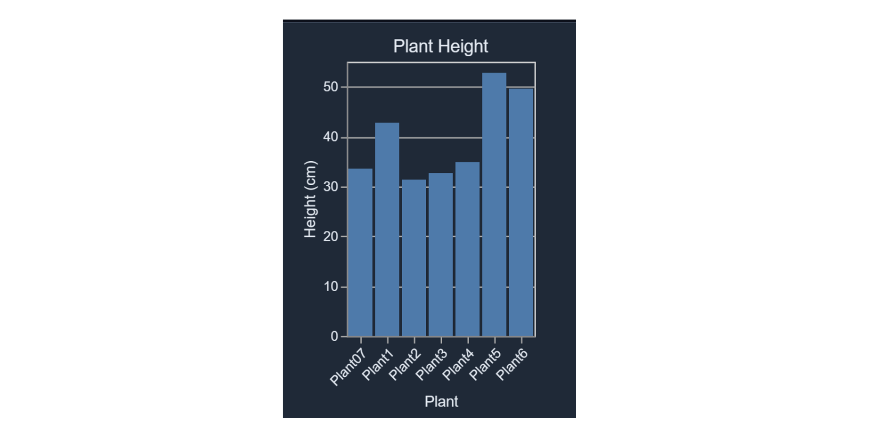
From the Select Plant dropdown, you can select the plant name to show plant analysis. Plant analysis has 2 tabs by default. If the Show Raw Images or Show Color Images options are chosen before, additional tabs will be displayed accordingly. In this case, as we chose both options, 4 tabs are displayed.
- Raw Input Images displays the input images to the pipeline
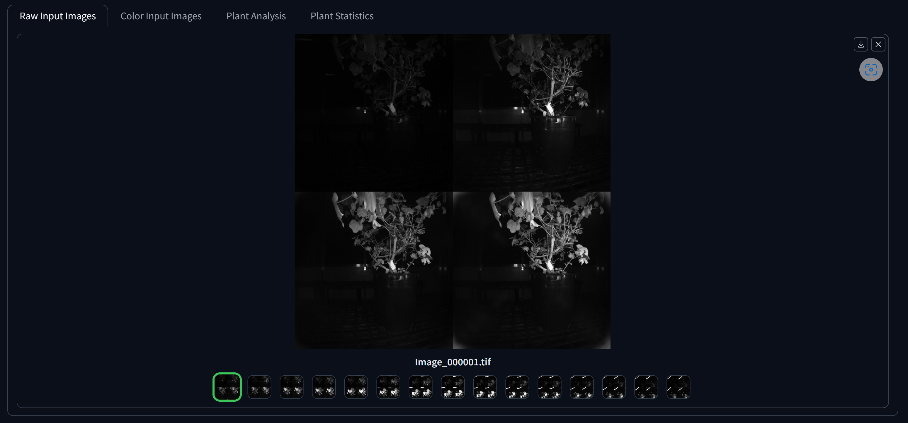
- Color Images displays images after converting to color
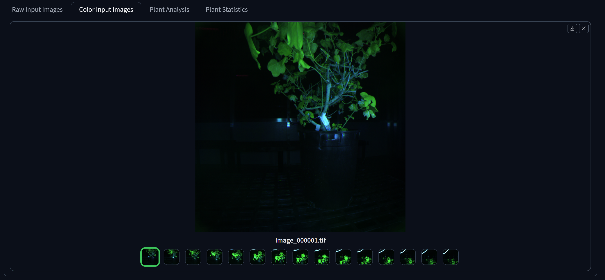
- Plant Analysis contains the extracted plant features
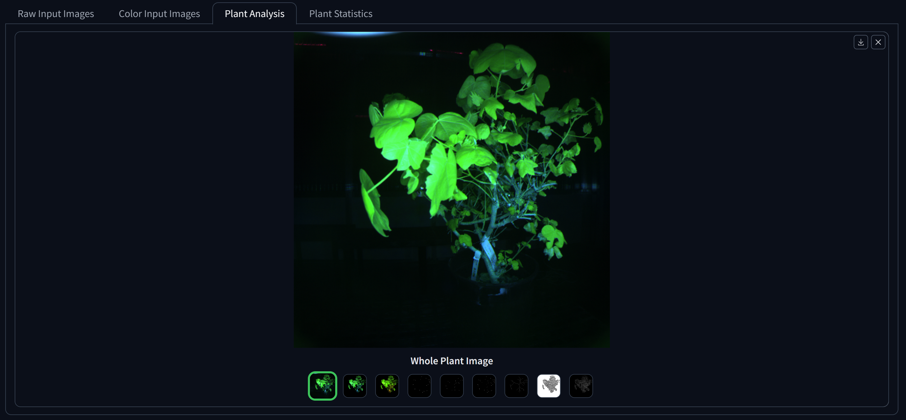
- Plant Statistics shows the estimated plant statistics
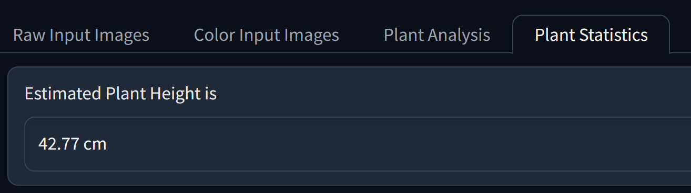
Save Result
Enter the folder path to which you want the results to be saved and click Save Results
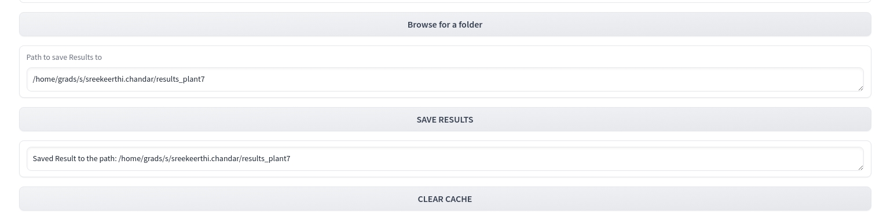
You will be prompted with a text box with path acknowledging that results are saved in particular path.
Clear and Refresh
To clear the result and start fresh again, click the clear button at the end. Alternatively, at any stage, you can also refresh the webpage to start fresh again